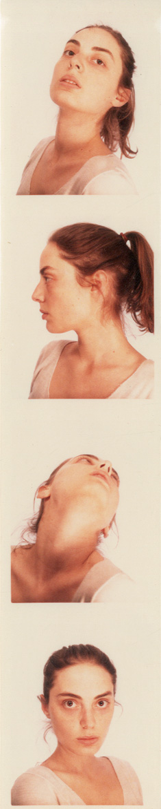

נועה סימון
נ. 1985, ירושלים.
חיה ויוצרת בתל אביב, מציירת בסטודיו בקריית המלאכה ומלמדת רישום וציור במוזיאון ישראל בירושלים.
2010-הווה - מלמדת באגף הנוער במוזיאון ישראל, ירושלים.
2010-2012 - כיתת האמן בבית הספר "התחנה", סטודיו לרישום וציור פיגורטיבי בתל אביב.
2006-2010 - תואר ראשון במחלקה לאמנות בבצלאל, אקדמיה לאמנות ועיצוב, ירושלים. בוגרת בהצטיינות.
ינואר 2009-אפריל 2009 - לימודים בפקולטה לאמנות ב Ontario College of Art & Design בטורונטו, קנדה, במסגרת חילופי סטודנטים.
בוגרת המגמה לאמנות לבגרות של אגף הנוער במוזיאון ישראל, ירושלים (2003).
ליצירת קשר:
simon.noas@gmail.com
תערוכת יחיד
2015 -
גופהּ - תערוכת דיוקנאות עצמיים של נועה סימון, גלריה "התחנה", תל אביב.
תערוכות קבוצתיות
2014 -
תערוכת מכירה, גלריה חנינא, תל אביב.
2014 -
תערוכת מכירה, גלריה "התחנה", תל אביב.
2014 -
יריד צבע טרי 7, תל אביב.
2014 -
תערוכה קבוצתית, גלריה "התחנה", תל אביב.
2013 -
ריאליטי.. זם – מבחר עבודות מאוסף דובי שיף, הגלריה לאמנות עכשווית גרנד ART, גרנד קניון, חיפה.
2013 -
תערוכת מכירה, גלריה חנינא, תל אביב.
2012 -
תערוכת פתיחה, גלריה "התחנה", תל אביב.
2012 -
תערוכת בוגרים, גלריה "התחנה", תל אביב.
2011 -
פנים אל פנים, האוניברסיטה המורמונית, ירושלים.
2010 -
חיפה, ישראל - פלובדיב, בולגריה 2010, גלריה פירמידה, חיפה.
2010 -
Haifa, Israel – Plovdiv, Bulgaria, Pygmalion House, Plovdiv, Bulgaria
2010 - תערוכת בוגרים באקדמיה בצלאל, ירושלים.
2010 -
Imagination 2010, תערוכת האמנות הישראלית למען הוועד למלחמה באיידס, בניין ההנהלה של בנק הפועלים, תל-אביב.
קישורים נוספים
נועה סימון בפייסבוק
נועה סימון באתר הגלריה
עמוד מורה באתר מוזיאון ישראל
תיק עבודות באתר בצלאל
עבודות שנתרמו לתערוכת Imagination 2010
תיק עבודות במסגרת "הפרוטוקולים", כתב העת המקוון של המחלקה להיסטוריה ותיאוריה בבצלאל
{kind=link}